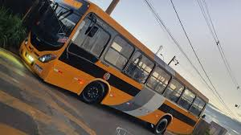
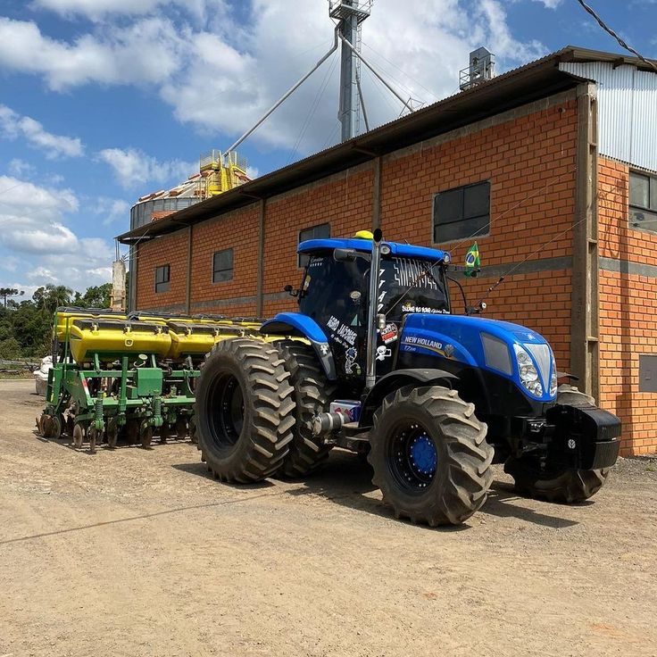
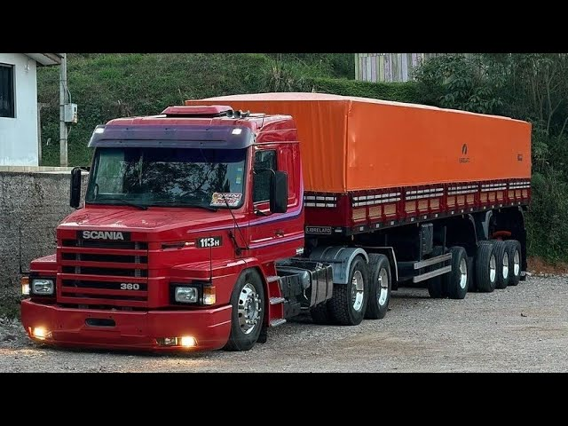

.jpeg)
Minhas Habilidades

veiculo da linha pesada
Ônibus da Linha Pesada Ônibus da linha pesada são veículos de grande porte, projetados para transportar passageiros em longas distâncias ou em terrenos difíceis. Eles são robustos, com alta capacidade de passageiros, motores potentes e sistemas de conforto e segurança avançados. Utilizados principalmente no transporte interurbano e rodoviário, esses ônibus oferecem resistência e eficiência em diversas condições de viagem.

veiculo da linha pesada
Trator Agrícola O trator agrícola é um veículo motorizado de grande porte, projetado para executar tarefas pesadas no campo, como arar, semear, cultivar e transportar cargas. Com potência e robustez, ele é essencial na agricultura, proporcionando maior eficiência e produtividade nas atividades rurais. Equipado com implementos, como arados, plantadeiras e colheitadeiras, o trator agrícola facilita o trabalho em grandes áreas de cultivo, sendo indispensável em fazendas e sítios.

veiculo da linha pesada
Caminhão Carreta O caminhão carreta é composto por um caminhão e um reboque, utilizado para transportar grandes cargas em longas distâncias. Com alta capacidade de carga, é essencial em setores como logística e comércio, oferecendo robustez e eficiência no transporte de mercadorias pesadas.